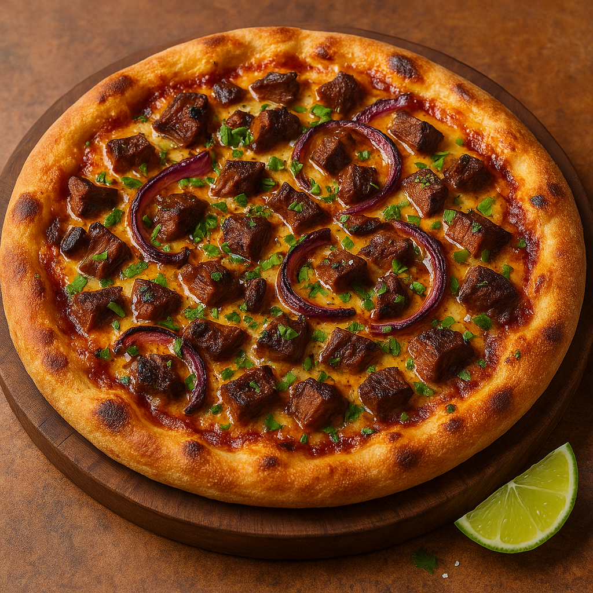

The Screecher Brisket BBQ Pizza
Description: A bold East Coast–meets–smokehouse fusion pizza using Newfoundland Screech Rum BBQ sauce.
Ingredients
- 1 prepared pizza dough (Neapolitan or hand-tossed)
- 1/2 cup Newfoundland Screech Rum BBQ Sauce (Wildly Delicious brand)
- 1 tbsp water or apple cider vinegar (optional, to thin sauce if needed)
- 3/4 cup shredded Mozzarella
- 3/4 cup shredded Old Cheddar
- 3/4 cup chopped smoked brisket (pre-cooked, ideally warm or at room temp)
- 1/2 small red onion, thinly sliced
- 1 tsp neutral oil (for charring onions)
- 2 tbsp sliced scallions
- 1 tbsp chopped flat-leaf parsley
- Flaky sea salt, to taste
- 1–2 wedges fresh lime
Instructions
- Preheat oven to 500°F (260°C) or as high as it will go. If using a pizza stone or steel, preheat it as well for at least 30 minutes.
- In a cast-iron pan over high heat, add oil and sear red onion slices until lightly charred but still crisp-tender. Set aside.
- Roll or stretch out your dough onto a pizza peel or baking sheet. Thin the Screech BBQ sauce with water or vinegar if needed and spread over the dough.
- Sprinkle the mozzarella and Old Cheddar evenly over the sauce.
- Distribute chopped brisket and charred red onions evenly.
- Transfer pizza to the hot oven or stone. Bake for 8–12 minutes, or until crust is blistered and cheese is bubbling and golden.
- After baking, sprinkle with scallions and parsley. Finish with flaky sea salt and a squeeze of lime before slicing.
Serving Tip
Pairs well with a dark lager or Screech-spiked cola. Serve hot and eat fast—this one disappears quickly.